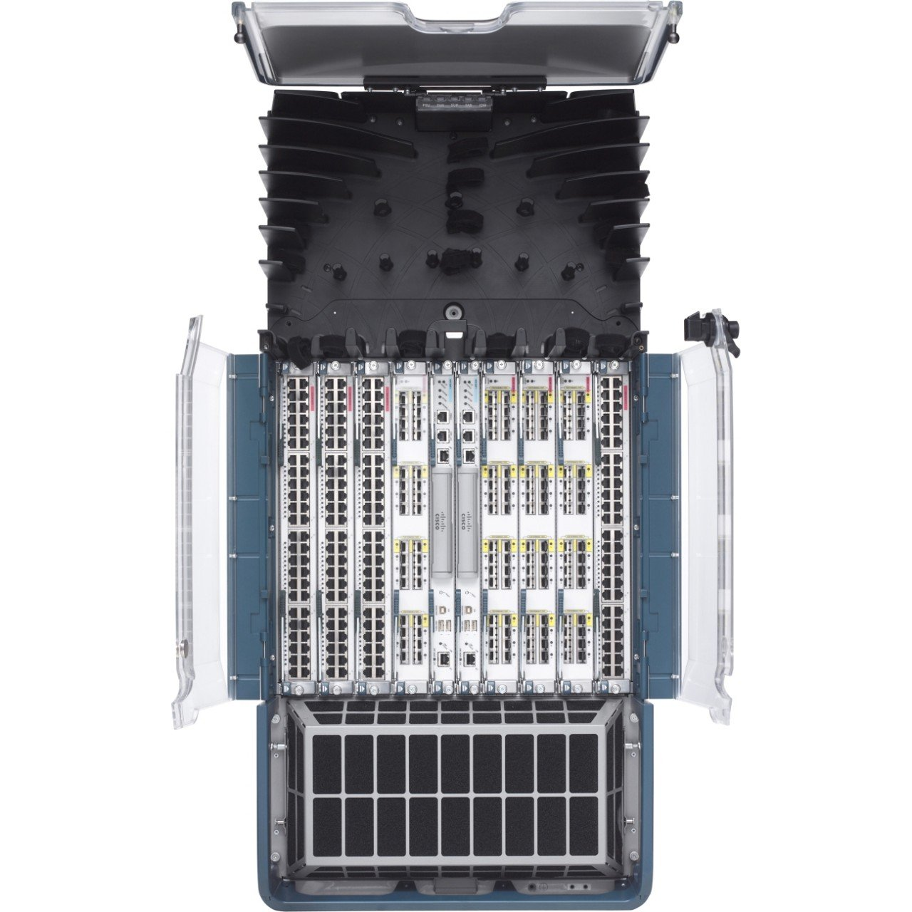
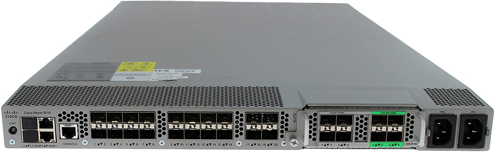

Controling task execution and managing workflow sequence.
Especially important when end result has dependencies between separate systems
Ordered sequence of tasks (commands, calls or any other type of actions).
Strictly formed according to the managed system's needs.
Device or service configuration/operational status that fulfills defined requirements.
Ability to evaluate state and execute actions only when a change to current state is needed.
Idempotent operation is one that has no additional effect if it is called more than once with the same input parameters.
interface Ethernet1/1
description Some descriptive text
switchport
switchport mode trunk
switchport trunk allowed vlan 4012-4013
no shutdown
---
name: Ethernet 1/1
description: Some descriptive text
swithport: true
switchport_mode: trunk
allowed_vlans:
- 4012
- 4013
shutdown: false
{
"name": "Ethernet 1/1",
"description": "Some descriptive text",
"swithport": true,
"switchport_mode": "trunk",
"allowed_vlans": [
4012,
4013
],
"shutdown": false
}
4012
4013
Some descriptive text
Ethernet 1/1
false
true
trunk
interface {{ name }}
description {{ description }}
{% if switchport %}
switchport
{% if switchport_mode == "trunk" %}
switchport mode {{ swithport_mode }}
switchport trunk allowed vlan none
{% for vlan in allowed_vlans %}
switchport trunk allowed vlan add {{ vlan }}
{% endfor %}
{% endif %}
{% endif %}
{% if shutdown %}
no shutdown
{% endif %}
YANG - A Data Modeling Language for the Network Configuration Protocol (NETCONF)
+--rw interfaces
| +--rw interface* [name]
| +--rw name string
| +--rw description? string
| +--rw type identityref
| +--rw enabled? boolean
Source: Cisco blogs
Traditionally state and "the truth" was derived from the network device
Network configuration representation is usually unstructured.
Source: NXOS config guide learning link
Layer converting unstructured data to other data representation forms.
Links for thurther development
This page is maintained by the team at Network to Code and has links to numerous resources and anything you could think of related to network automation.
This course from Kirk Byers offers free training on Python, using specific examples relevant to Python. Kirk is the maintainer of Netmiko and is a core contributor on many open source network modules.
All Cisco things related to software development, programmable integration and autmation.
A series of blogs introducing various aspects of network programability topics by Julio Gomez
Short, simple, browser-based examples covering fundamentals and examples. I’d recommend not moving onto any others until you’ve done all the lessons offered.
A Slack workspace for the network automation community, hosted by Network to Code. There are numerous channels and hundreds of people on this workspace contributing and helping others.
Nexus 7010 (version 6.2.24a)
Nexus 5010 (version 5.1.3 N2 1a)
Nexus 2248TP